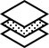

Зачем использовать ламинацию

Чтобы придать внешнему виду окна оригинальную выразительность, специалисты применяют ламинацию – приём, при помощи которого можно декорировать своё жилье с учетом самых современных веяний дизайнерского искусства.
При помощи ламинации оконного профиля можно, например, со всей точностью воспроизвести оттенки и структуру древесины: при этом обеспечивается полная визуализация натурального дерева, точно имитирующая расположение волокон. Помимо имитации деревянных поверхностей, применяют пленку самых разных цветов и фактур.
Как окна становятся цветными?
Собственно, процесс ламинации профиля ПВХ состоит в процедуре нанесения на его поверхность декоративных высокопрочных плёнок с применением специального клея и ламинирующих установок.
Плёнку прочно соединяют с профилем. При этом внешней стороне пленки свойственна высокая стойкость к повреждениям. В частности, цветное пластиковое окно, прошедшее процесс ламинации, стойко переносит температурные колебания в диапазоне от -80°С до +130°С, оно исключительно стойко к солнечному излучению.
Пластиковые окна, прошедшие процесс ламинации профилей, имеют срок службы гораздо больший, чем не ламинированные окна. В сравнении с окнами из массива дерева, они значительно дешевле.